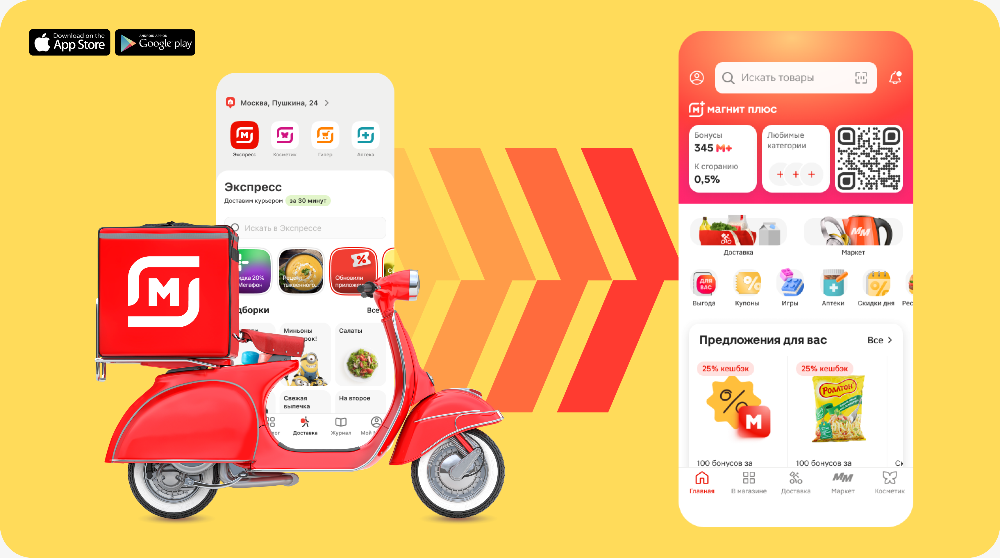
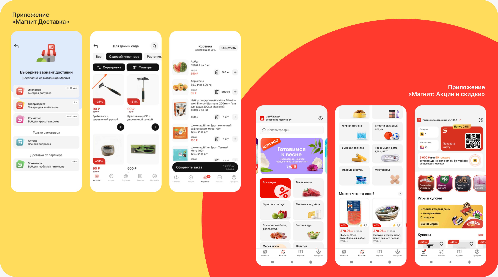
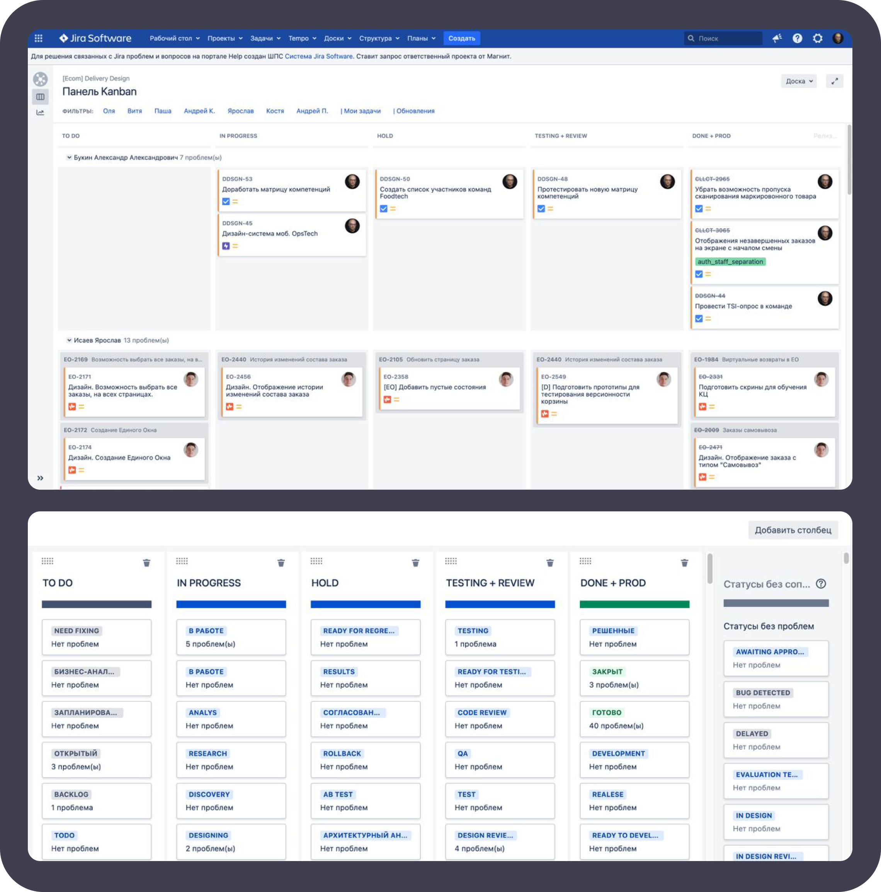
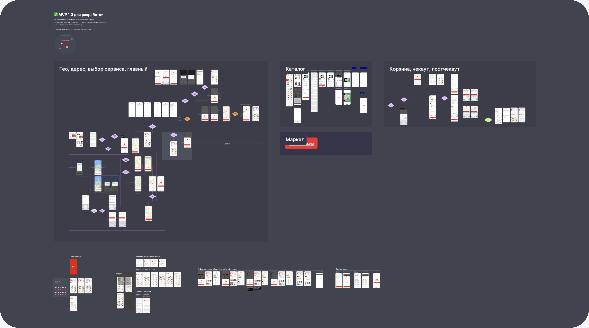
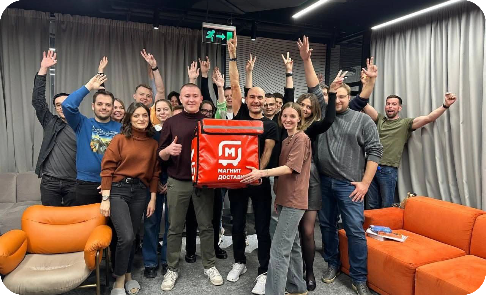

Как управлять дизайном, когда меняется весь продукт
Магнит — один из лидеров российского ритейла. По состоянию на 2021 год «Магнит» — третья по выручке частная компания России. Магнит работает более чем в 4000 населённых пунктов и ежедневно обслуживает свыше 18 млн покупателей.
Магнит OMNI — IT-группа «Магнита», которая создаёт единый цифровой опыт для клиентов. Приложение «Магнит: акции и доставка» насчитывает 24 млн активных пользователей ежемесячно.
Проект
Магнит Доставка, Магнит: акции и скидки
Роль
Дизайн-лид (руководитель дизайн-группы)
Скоуп
Проектирование, синхронизация, найм, планирование, ревью, презентация и защита решений
Результат
Интеграция функционала приложения Доставки в приложение акций

Контекст
В роли Senior
В Магнит я пришёл в июне 2022 года. Тогда у Магнита было 2 основных B2C-приложения: Доставка и Акции. Я шёл в команду Доставки, потому что давно хотел поработать в Ecom. За год в роли Senior product designer я реализовал дизайн блока PDT (сократило число обращений в КЦ на ~17%), за счёт редизайна разводящего экрана повысил CR в форматы на 23%), за счёт изменения экрана адреса устранил отток пользователей на первом этапе воронки, интегрировал Аптеки в приложение и ещё ряд других фичей.
Senior → Lead
Весной 2023 года команду Доставки покинул наш тогдашний дизайн-лид и рекомендовал меня на роль дизайн-лида. Я, как дизайн-лид, стал отвечать за весь продуктовый дизайн приложения Доставка, а также за часть операционных продуктов. Команды и продукты: Корзина и Чекаут, Постчекаут, Главный экран, Гео, Курьерка, Сборка и Контакт-центр. У каждой команды был свой PM, бэклог и участок флоу.
Продуктовая трансформация в Магните
В то же время в компании стартовала трансформация — планировалось слияние двух приложений. Из двух приложений «Доставка» и «Акции» топы приняли решение делать один Super App — «Магнит: Акции и доставка».

Сравнение разного UI двух приложений «Магнит Доставка» и «Магнит Акции»
Задача
Передо мной была поставлена задача взять руководство дизайн-командой «Доставки» и провести интеграцию всех сценариев приложения «Магнит Доставка» с приложением «Магнит: Акции и скидки». Ключевые подзадачи, которые я для себя определил сам включали:
✦ Запустить найм на позицию senior designer на моё место;
✦ Собрать единый флоу Доставки на дизайн-системе Акций;
✦ Интегрировать флоу Доставки в приложение Акций;
✦ Сохраниить и усилить команду дизайна.
Решение
Фокусировка
В ходе нескольких митингов, инициированных мной с CPO и продактами, уточнили и зафиксировали стратегию трансформации, а также виденье и требования бизнеса. Стратегия объединения была определена на уровне топ-менеджера Гюванча Донмеза — функциональность доставки переносилась в приложение «Акций» максимально близко к текущей логике.
Процессы в команде
Наша команда и процессы находились на стадии развития в тот момент. Поэтому для обеспечения работы команды необходимо было выстроить базу. Второе, что я сделал после запуска найма senior на свою позицию, было:
✦ Доска команды в Jira;
✦ Процесс кросс-ревью (когда макеты может ревьюить не только лид, но и любой синьор команды);
✦ Планирование задач на спринт с продактами B2C;
✦ Каждый макет теперь сопровождался паспортом;
✦ Еженедельные 1-1 с дизайнерами.
Подготовка, описание и запуск этих процессов занял меньше спринта, но позволил мне перейти к решению основной задачи.

Дизайн-доска нашей вертикали в Jira внутри Магнит
Проектирование
Перед проектированием ключевого флоу я провёл анализ конкурентов и бенчмаркинг ряда супераппов.
Так как у нас в Доставке не было макета с единым флоу, соответствующему проду, а всё хранилось в отдельных файлах дизайнеров, я взял на себя роль владельца единого сквозного флоу доставки. Я собрал единый сквозной целевой target-state флоу доставки из сценариев разных команд.
После того, как была сделана первая итерация, я провёл несколько сессий синхронизации с продактами Доставки и командами разработки и анализа. В ходе обсуждений внутри команды был произведён ряд доработок, в результате чего мы получили вторую версию целевого сценария.
Флоу отображал основной успешный путь для двух основных когорт пользователей (новичков и текущих пользователей), а также отражал точки входа и пересечение сценариев Доставки и Акций (главной проблемой были 2 каталога — онлайн и офлайн, которые технически невозможно было объединить). Она была показана команде приложения Акций и взята на ресерч их разработчиками. Позже они вернулись с рядом ограничений и пожеланий, которые были внесены мной в упрощённый MVP-сценарий для первого запуска.
MVP-флоу был показан команде приложения Акций и взят на ресерч их разработчиками. Позже они вернулись с рядом ограничений и пожеланий, которые были внесены мной в сценарий и утверждены ведущими продактами вертикалей.
Два приложения — две дизайн-системы
Исторически сложилось так, что изначально два наших приложения были реализованы в разное время двумя разными командами. В результате мы имели две параллельно существующих дизайн-системы, которые хоть и выглядели похоже, но имели разную структуру и токены.
Когда основной MVP-флоу был собран, синхронизирован и утверждён всеми заинтересованными лицами, я поручил дизайнерам наших команд пересобрать свои участки флоу на дизайн-системе приложения Акций, а также добавить дополнительные сценарии, состояния экранов и отобразить состояния системы.

MVP-версия интеграции функционала Доставки в приложение Акций и скидок
Релиз
В результате у нас получился единый файл с общим флоу функционала Доставки, интегрированный в приложение Акций. Он был передан в разработку. В ходе разработки я и дизайнеры синхронизировались с разработчиками, инициировали сессии пре-прод ревью. Далее прошёл процесс тестирования и новый функционал был подготовлен к внутреннему тестированию friends&family. В ходе месячного тестирования были устранены некоторые баги. После этого флоу был раскатан на 100 тыс. пользователей нескольких городов РФ. После релиз был выполнен ещё на ряде городов и в конечном итоге, в сентябре 2023 года в приложение Акций была совершена полная интеграция функционала Доставки, а приложение Доставки осталось лишь как заглушка для переадресации в приложение Акций.
Результат
За счёт миграции новых пользователей в приложение Акций, а также за счёт появления у текущих пользователей Акций нового функционала доставки, в Q3 2023 года удалось увеличить число пользователей доставки на 25%.
Помимо этого, за счёт сокращения ресурсов на поддержку работы двух приложений, удалось перераспределить и сфокусировать работу на одном приложении, а также высвободить ресурс под новые проекты и запуски.
С какими проблемами я столкнулся
✦ Сценарии из разных приложений конфликтовали;
✦ Было 2 разных дизайн-системы;
✦ Не было единого лидера от дизайна и продукта;
✦ Разные бизнес-цели приложений;
✦ Разные паттерны пользователей;
✦ Разное легаси;
✦ Разный уровень проработки;
✦ Дизайнеры работали независимо;
✦ Не было единого владельца UX;
✦ Было очень стрессово и тяжело.
Личные выводы
Объединение двух приложений стало для меня первым опытом управления дизайном в масштабной продуктовой трансформации. Я выступал владельцем сквозного UX доставки, координировал работу 7 продуктовых команд и обеспечил консолидацию пользовательских сценариев в единый опыт. Этот проект стал ключевым шагом в моём переходе от senior-дизайнера к дизайн-лиду в рамках Магнита.

Руководители объединённых команд приложений Доставки и Акций вместе с СЕО Гюванчем Донмезом